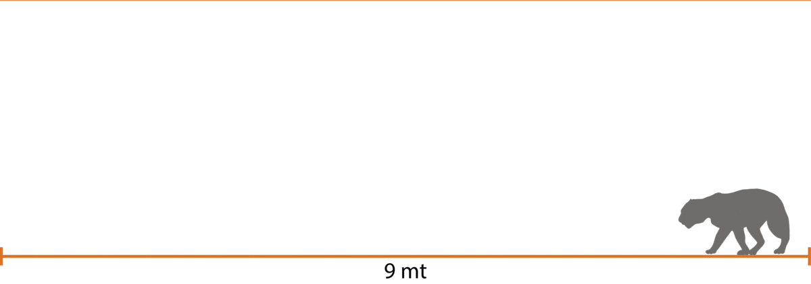
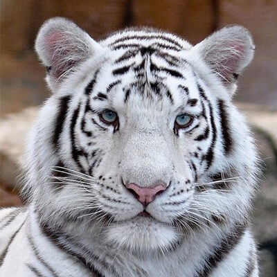

Presencia
Se reconocen seis subespecies de Panthera tigris, que aún existen en vida silvestre. La subespecie Panthera tigris tigris es nativa de India y Bangladesh, pero tiene su rango de distribución a lo largo de todo el subcontinente indio, aunque la fragmentación de su hábitat ha generado que sea una distribución parchosa y que actualmente estén presentes casi exclusivamente en reservas naturales y parques nacionales. También se encuentran en Nepal, Bután y China.
Hábitat
Por su distribución, se les puede encontrar en má de algún hábitat.
Características
Visión del tigre
Su visión es muy aguda aún en la oscuridad. De noche su pupila se agranda para dejar pasar más luz y de día en cambio se reduce.
Tamaños
Son los miembros más grandes de la familia de los felinos.
¿Cómo son sus colmillos?
Comparación del colmillo de un tigre con un gato.
¿Cómo funcionan sus garras?
En ataque el tendón pulsa el dedo de la pata hacia adelante y en reposo los ligamentos mantienen el hueso de la pata hacia atrás.
Salto del tigre

El salto horizontal del tigre puede llegar a 9 metros de longitud, similar a 4 autos estacionados.
Alimentación
Dotado de su camuflaje, fuerza, colmillos y garras, y un salto de 9 metros, puede capturar a los grandes mamíferos, aves, peces, roedores y anfibios que se incluyen en su dieta carnívora.
Variación genética
Existe una mutación genética que produce que la piel naranja del tigre se sustituya por otro color.

Tigre Blanco
Su color blanco roto o crema obedece a una mutación recesiva, es decir, a una mala transcripción del código genético en el gen responsable del color (cuando madre y padre son portadores de dicho gen). Tienen pupilas de color rosa e iris azul, generalmente. Las franjas son de tonalidades que van del gris tostado al negro.
Amenazas
Su principal amenaza es la fragmentación y pérdida de su hábitat natural, debido a múltiples presiones humanas como la construcción de caminos y la expansión de la urbe.
Causas de la caza de tigres
Disminución de población
En los últimos 100 años la población ha disminuido a causa de cazadores al sur de Asia.